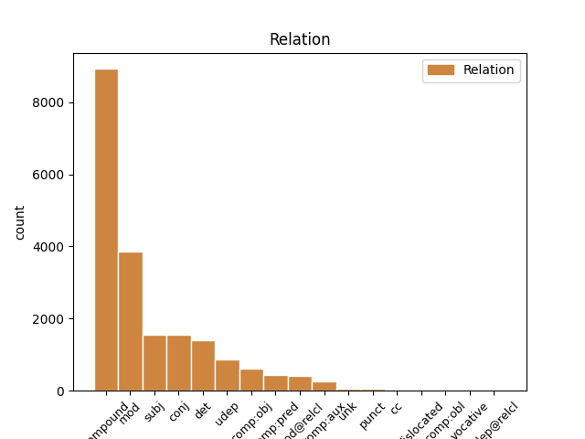

Distribution of features within this leaf

Agreement Rules sorted by frequency.
When the dependent token is None
1 ایڈمرل _ _ _ _ 0 _ _ _
2 مولن _ _ _ _ 0 _ _ _
3 نے _ _ _ _ 0 _ _ _
4 امریکہ _ _ _ _ 0 _ _ _
5 کی _ _ _ _ 0 _ _ _
6 جانب _ _ _ _ 0 _ _ _
7 سے _ _ _ _ 0 _ _ _
8 اعتماد _ _ _ _ 0 _ _ _
9 کے _ _ _ _ 0 _ _ _
10 فقدان _ _ _ _ 0 _ _ _
11 پر _ _ _ _ 0 _ _ _
12 بات _ _ _ _ 0 _ _ _
13 کرتے _ _ _ _ 0 _ _ _
14 ہوئے _ _ _ _ 0 _ _ _
15 کہا _ _ _ _ 0 _ _ _
16 کہ _ _ _ _ 0 _ _ _
17 آئی _ _ _ _ 0 _ _ _
18 ایس _ _ _ _ 0 _ _ _
19 آئی _ _ _ _ 0 _ _ _
20 کے _ _ _ _ 0 _ _ _
21 بعض _ _ _ _ 0 _ _ _
22 عناصر _ _ _ _ 0 _ _ _
23 حقانی حقانی PROPN NNPC Case=Nom|Gender=Masc|Number=Sing|Person=3 24 compound _ ChunkId=NP8|ChunkType=child|Tam=0|Vib=0
24 نیٹورک نیٹورک PROPN NNP Case=Acc|Gender=Masc|Number=Sing|Person=3 0 _ _ _
25 کی _ _ _ _ 0 _ _ _
26 مدد _ _ _ _ 0 _ _ _
27 کر _ _ _ _ 0 _ _ _
28 رہے _ _ _ _ 0 _ _ _
29 ہےں _ _ _ _ 0 _ _ _
30 ۔ _ _ _ _ 0 _ _ _
When the dependent token is None
1 ایڈمرل _ _ _ _ 0 _ _ _
2 مولن _ _ _ _ 0 _ _ _
3 نے _ _ _ _ 0 _ _ _
4 امریکہ _ _ _ _ 0 _ _ _
5 کی _ _ _ _ 0 _ _ _
6 جانب _ _ _ _ 0 _ _ _
7 سے _ _ _ _ 0 _ _ _
8 اعتماد _ _ _ _ 0 _ _ _
9 کے _ _ _ _ 0 _ _ _
10 فقدان _ _ _ _ 0 _ _ _
11 پر _ _ _ _ 0 _ _ _
12 بات _ _ _ _ 0 _ _ _
13 کرتے _ _ _ _ 0 _ _ _
14 ہوئے _ _ _ _ 0 _ _ _
15 کہا _ _ _ _ 0 _ _ _
16 کہ _ _ _ _ 0 _ _ _
17 آئی _ _ _ _ 0 _ _ _
18 ایس _ _ _ _ 0 _ _ _
19 آئی _ _ _ _ 0 _ _ _
20 کے _ _ _ _ 0 _ _ _
21 بعض _ _ _ _ 0 _ _ _
22 عناصر عنصر NOUN NN Case=Nom|Gender=Masc|Number=Plur|Person=3 29 subj _ ChunkId=NP7|ChunkType=head|Tam=0|Vib=0
23 حقانی _ _ _ _ 0 _ _ _
24 نیٹورک _ _ _ _ 0 _ _ _
25 کی _ _ _ _ 0 _ _ _
26 مدد _ _ _ _ 0 _ _ _
27 کر _ _ _ _ 0 _ _ _
28 رہے _ _ _ _ 0 _ _ _
29 ہےں ہے AUX VAUX Mood=Ind|Number=Plur|Person=3|Tense=Pres|VerbForm=Fin 0 _ _ _
30 ۔ _ _ _ _ 0 _ _ _
When the dependent token is None
1 اس _ _ _ _ 0 _ _ _
2 کے _ _ _ _ 0 _ _ _
3 ساتھ _ _ _ _ 0 _ _ _
4 ہی _ _ _ _ 0 _ _ _
5 انہوں _ _ _ _ 0 _ _ _
6 نے _ _ _ _ 0 _ _ _
7 اس یہ DET DEM Case=Nom|Number=Sing|Person=3|PronType=Dem 8 det _ ChunkId=NP3|ChunkType=child
8 بات بات NOUN NN Case=Acc|Gender=Fem|Number=Sing|Person=3 0 _ _ _
9 کا _ _ _ _ 0 _ _ _
10 اعادہ _ _ _ _ 0 _ _ _
11 بھی _ _ _ _ 0 _ _ _
12 کیا _ _ _ _ 0 _ _ _
13 کہ _ _ _ _ 0 _ _ _
14 ہم _ _ _ _ 0 _ _ _
15 ماضی _ _ _ _ 0 _ _ _
16 کی _ _ _ _ 0 _ _ _
17 غلطیاں _ _ _ _ 0 _ _ _
18 نہیں _ _ _ _ 0 _ _ _
19 دہرائیں _ _ _ _ 0 _ _ _
20 گے _ _ _ _ 0 _ _ _
21 ۔ _ _ _ _ 0 _ _ _
When the dependent token is None
1 انہوں _ _ _ _ 0 _ _ _
2 نے _ _ _ _ 0 _ _ _
3 کہا _ _ _ _ 0 _ _ _
4 کہ _ _ _ _ 0 _ _ _
5 ریاست _ _ _ _ 0 _ _ _
6 مےں _ _ _ _ 0 _ _ _
7 خواندگی _ _ _ _ 0 _ _ _
8 کی _ _ _ _ 0 _ _ _
9 شرح _ _ _ _ 0 _ _ _
10 77 _ _ _ _ 0 _ _ _
11 فیصد فیصد NOUN NN Case=Nom|Gender=Masc|Number=Sing|Person=3 0 _ _ _
12 ہے _ _ _ _ 0 _ _ _
13 جبکہ _ _ _ _ 0 _ _ _
14 قومی _ _ _ _ 0 _ _ _
15 سطح _ _ _ _ 0 _ _ _
16 پر _ _ _ _ 0 _ _ _
17 یہ _ _ _ _ 0 _ _ _
18 شرح _ _ _ _ 0 _ _ _
19 76 _ _ _ _ 0 _ _ _
20 فیصد _ _ _ _ 0 _ _ _
21 ہے ہے AUX VM Mood=Ind|Number=Sing|Person=3|Tense=Pres|VerbForm=Fin|Voice=Act 11 conj _ AltTag=AUX-VERB|ChunkId=VGF3|ChunkType=head|SpaceAfter=No|Stype=declarative|Tam=hE|Vib=ہے
22 ۔ _ _ _ _ 0 _ _ _
When the dependent token is None
1 امریکی _ _ _ _ 0 _ _ _
2 مسلح _ _ _ _ 0 _ _ _
3 افواج _ _ _ _ 0 _ _ _
4 کے _ _ _ _ 0 _ _ _
5 سربراہ _ _ _ _ 0 _ _ _
6 چیرمین _ _ _ _ 0 _ _ _
7 جوائنٹ _ _ _ _ 0 _ _ _
8 چیفس _ _ _ _ 0 _ _ _
9 آف _ _ _ _ 0 _ _ _
10 اسٹاف _ _ _ _ 0 _ _ _
11 ایڈمرل _ _ _ _ 0 _ _ _
12 مائیک _ _ _ _ 0 _ _ _
13 مولن _ _ _ _ 0 _ _ _
14 نے _ _ _ _ 0 _ _ _
15 جنگ _ _ _ _ 0 _ _ _
16 کو _ _ _ _ 0 _ _ _
17 انٹرویو _ _ _ _ 0 _ _ _
18 دیتے _ _ _ _ 0 _ _ _
19 ہوئے _ _ _ _ 0 _ _ _
20 اس _ _ _ _ 0 _ _ _
21 بات _ _ _ _ 0 _ _ _
22 کا _ _ _ _ 0 _ _ _
23 اعتراف _ _ _ _ 0 _ _ _
24 کیا _ _ _ _ 0 _ _ _
25 ہے _ _ _ _ 0 _ _ _
26 کہ _ _ _ _ 0 _ _ _
27 پاک _ _ _ _ 0 _ _ _
28 امریکہ _ _ _ _ 0 _ _ _
29 تعلقات _ _ _ _ 0 _ _ _
30 گزشتہ _ _ _ _ 0 _ _ _
31 کئی _ _ _ _ 0 _ _ _
32 ماہ _ _ _ _ 0 _ _ _
33 سے _ _ _ _ 0 _ _ _
34 مشکلات _ _ _ _ 0 _ _ _
35 کا _ _ _ _ 0 _ _ _
36 شکار _ _ _ _ 0 _ _ _
37 ہےں _ _ _ _ 0 _ _ _
38 اور _ _ _ _ 0 _ _ _
39 دونوں _ _ _ _ 0 _ _ _
40 ملکوں _ _ _ _ 0 _ _ _
41 کے _ _ _ _ 0 _ _ _
42 درمیان درمیان ADP NST AdpType=Post|Case=Nom|Gender=Masc|Number=Sing|Person=3 46 udep _ AltTag=ADP-NOUN|ChunkId=NP12|ChunkType=child
43 اعتماد _ _ _ _ 0 _ _ _
44 کا _ _ _ _ 0 _ _ _
45 فقدان _ _ _ _ 0 _ _ _
46 ہے ہے VERB VM Mood=Ind|Number=Sing|Person=3|Tense=Pres|VerbForm=Fin|Voice=Act 0 _ _ _
47 ۔ _ _ _ _ 0 _ _ _
When the dependent token is None
1 امریکی _ _ _ _ 0 _ _ _
2 مسلح _ _ _ _ 0 _ _ _
3 افواج _ _ _ _ 0 _ _ _
4 کے _ _ _ _ 0 _ _ _
5 سربراہ _ _ _ _ 0 _ _ _
6 چیرمین _ _ _ _ 0 _ _ _
7 جوائنٹ _ _ _ _ 0 _ _ _
8 چیفس _ _ _ _ 0 _ _ _
9 آف _ _ _ _ 0 _ _ _
10 اسٹاف _ _ _ _ 0 _ _ _
11 ایڈمرل _ _ _ _ 0 _ _ _
12 مائیک _ _ _ _ 0 _ _ _
13 مولن _ _ _ _ 0 _ _ _
14 نے _ _ _ _ 0 _ _ _
15 جنگ _ _ _ _ 0 _ _ _
16 کو _ _ _ _ 0 _ _ _
17 انٹرویو _ _ _ _ 0 _ _ _
18 دیتے _ _ _ _ 0 _ _ _
19 ہوئے _ _ _ _ 0 _ _ _
20 اس _ _ _ _ 0 _ _ _
21 بات _ _ _ _ 0 _ _ _
22 کا _ _ _ _ 0 _ _ _
23 اعتراف _ _ _ _ 0 _ _ _
24 کیا _ _ _ _ 0 _ _ _
25 ہے _ _ _ _ 0 _ _ _
26 کہ _ _ _ _ 0 _ _ _
27 پاک _ _ _ _ 0 _ _ _
28 امریکہ _ _ _ _ 0 _ _ _
29 تعلقات _ _ _ _ 0 _ _ _
30 گزشتہ _ _ _ _ 0 _ _ _
31 کئی _ _ _ _ 0 _ _ _
32 ماہ _ _ _ _ 0 _ _ _
33 سے _ _ _ _ 0 _ _ _
34 مشکلات _ _ _ _ 0 _ _ _
35 کا _ _ _ _ 0 _ _ _
36 شکار _ _ _ _ 0 _ _ _
37 ہےں ہے VERB VM Mood=Ind|Number=Plur|Person=3|Tense=Pres|VerbForm=Fin|Voice=Act 0 _ _ _
38 اور _ _ _ _ 0 _ _ _
39 دونوں _ _ _ _ 0 _ _ _
40 ملکوں _ _ _ _ 0 _ _ _
41 کے _ _ _ _ 0 _ _ _
42 درمیان _ _ _ _ 0 _ _ _
43 اعتماد _ _ _ _ 0 _ _ _
44 کا _ _ _ _ 0 _ _ _
45 فقدان _ _ _ _ 0 _ _ _
46 ہے ہے VERB VM Mood=Ind|Number=Sing|Person=3|Tense=Pres|VerbForm=Fin|Voice=Act 37 conj _ ChunkId=VGF3|ChunkType=head|SpaceAfter=No|Stype=declarative|Tam=hE|Vib=ہے
47 ۔ _ _ _ _ 0 _ _ _
When the dependent token is None
1 آئی _ _ _ _ 0 _ _ _
2 جی _ _ _ _ 0 _ _ _
3 حیدرآباد _ _ _ _ 0 _ _ _
4 رینج _ _ _ _ 0 _ _ _
5 مسٹر _ _ _ _ 0 _ _ _
6 راجو _ _ _ _ 0 _ _ _
7 رتن _ _ _ _ 0 _ _ _
8 نے _ _ _ _ 0 _ _ _
9 نظام _ _ _ _ 0 _ _ _
10 آباد _ _ _ _ 0 _ _ _
11 ٹاون _ _ _ _ 0 _ _ _
12 اور _ _ _ _ 0 _ _ _
13 نظام _ _ _ _ 0 _ _ _
14 آباد _ _ _ _ 0 _ _ _
15 رورل _ _ _ _ 0 _ _ _
16 کے _ _ _ _ 0 _ _ _
17 علاوہ _ _ _ _ 0 _ _ _
18 جملہ جملہ ADJ JJ Case=Nom|Gender=Masc|Number=Sing|Person=3 21 mod _ ChunkId=NP4|ChunkType=child|Tam=0|Vib=0
19 12 _ _ _ _ 0 _ _ _
20 سرکل _ _ _ _ 0 _ _ _
21 انسپکٹروں انسپکٹر NOUN NN Case=Acc|Gender=Masc|Number=Plur|Person=3 0 _ _ _
22 کا _ _ _ _ 0 _ _ _
23 تبادلہ _ _ _ _ 0 _ _ _
24 کیا _ _ _ _ 0 _ _ _
25 ۔ _ _ _ _ 0 _ _ _
When the dependent token is None
1 صدر _ _ _ _ 0 _ _ _
2 پردیش _ _ _ _ 0 _ _ _
3 کانگریس _ _ _ _ 0 _ _ _
4 کمیٹی _ _ _ _ 0 _ _ _
5 مسٹر _ _ _ _ 0 _ _ _
6 ڈی _ _ _ _ 0 _ _ _
7 سرینواس _ _ _ _ 0 _ _ _
8 کی _ _ _ _ 0 _ _ _
9 جانب _ _ _ _ 0 _ _ _
10 سے _ _ _ _ 0 _ _ _
11 جگن _ _ _ _ 0 _ _ _
12 اور _ _ _ _ 0 _ _ _
13 بی _ _ _ _ 0 _ _ _
14 جے _ _ _ _ 0 _ _ _
15 پی _ _ _ _ 0 _ _ _
16 مےں _ _ _ _ 0 _ _ _
17 خفیہ _ _ _ _ 0 _ _ _
18 اتحاد _ _ _ _ 0 _ _ _
19 ہونے _ _ _ _ 0 _ _ _
20 اور _ _ _ _ 0 _ _ _
21 جگن _ _ _ _ 0 _ _ _
22 کو _ _ _ _ 0 _ _ _
23 دینے _ _ _ _ 0 _ _ _
24 والا _ _ _ _ 0 _ _ _
25 ووٹ _ _ _ _ 0 _ _ _
26 بی _ _ _ _ 0 _ _ _
27 جے _ _ _ _ 0 _ _ _
28 پی _ _ _ _ 0 _ _ _
29 کو _ _ _ _ 0 _ _ _
30 پڑنے _ _ _ _ 0 _ _ _
31 جیسے _ _ _ _ 0 _ _ _
32 ریمارکس _ _ _ _ 0 _ _ _
33 کو _ _ _ _ 0 _ _ _
34 تکلیف_دہ _ _ _ _ 0 _ _ _
35 قرار _ _ _ _ 0 _ _ _
36 دیتے _ _ _ _ 0 _ _ _
37 ہوئے _ _ _ _ 0 _ _ _
38 کہا _ _ _ _ 0 _ _ _
39 کہ _ _ _ _ 0 _ _ _
40 جگن _ _ _ _ 0 _ _ _
41 موہن _ _ _ _ 0 _ _ _
42 ریڈی _ _ _ _ 0 _ _ _
43 نے _ _ _ _ 0 _ _ _
44 پہلے پہلا ADV NST AdpType=Post|Case=Nom|Gender=Masc|Number=Sing|Person=3 60 mod _ AltTag=ADV-NOUN|ChunkId=NP11|ChunkType=head
45 ہی _ _ _ _ 0 _ _ _
46 بی _ _ _ _ 0 _ _ _
47 جے _ _ _ _ 0 _ _ _
48 پی _ _ _ _ 0 _ _ _
49 سے _ _ _ _ 0 _ _ _
50 اتحاد _ _ _ _ 0 _ _ _
51 نہ _ _ _ _ 0 _ _ _
52 کرنے _ _ _ _ 0 _ _ _
53 اپنی _ _ _ _ 0 _ _ _
54 جماعت _ _ _ _ 0 _ _ _
55 سیکولر _ _ _ _ 0 _ _ _
56 ہونے _ _ _ _ 0 _ _ _
57 کا _ _ _ _ 0 _ _ _
58 اعلان _ _ _ _ 0 _ _ _
59 کیا _ _ _ _ 0 _ _ _
60 ہے ہے AUX VAUX Mood=Ind|Number=Sing|Person=3|Tense=Pres|VerbForm=Fin 0 _ _ _
61 ۔ _ _ _ _ 0 _ _ _
When the dependent token is None
1 مسز مسز PART RP Case=Nom|Gender=Masc|Number=Sing|Person=3 3 unk _ ChunkId=NP|ChunkType=child|Tam=0|Vib=0
2 کونڈا _ _ _ _ 0 _ _ _
3 سریکھا سریکھا PROPN NNP Case=Acc|Gender=Masc|Number=Sing|Person=3 0 _ _ _
4 کے _ _ _ _ 0 _ _ _
5 بشمول _ _ _ _ 0 _ _ _
6 جگن _ _ _ _ 0 _ _ _
7 کی _ _ _ _ 0 _ _ _
8 تائید _ _ _ _ 0 _ _ _
9 کرنے _ _ _ _ 0 _ _ _
10 والے _ _ _ _ 0 _ _ _
11 مزید _ _ _ _ 0 _ _ _
12 5 _ _ _ _ 0 _ _ _
13 ارکان _ _ _ _ 0 _ _ _
14 اسمبلی _ _ _ _ 0 _ _ _
15 کی _ _ _ _ 0 _ _ _
16 رکنیت _ _ _ _ 0 _ _ _
17 منسوخ _ _ _ _ 0 _ _ _
18 کرنے _ _ _ _ 0 _ _ _
19 کے _ _ _ _ 0 _ _ _
20 سوال _ _ _ _ 0 _ _ _
21 کا _ _ _ _ 0 _ _ _
22 جواب _ _ _ _ 0 _ _ _
23 دیتے _ _ _ _ 0 _ _ _
24 ہوئے _ _ _ _ 0 _ _ _
25 کہا _ _ _ _ 0 _ _ _
26 کہ _ _ _ _ 0 _ _ _
27 ہم _ _ _ _ 0 _ _ _
28 کارروائی _ _ _ _ 0 _ _ _
29 سے _ _ _ _ 0 _ _ _
30 ڈرنے _ _ _ _ 0 _ _ _
31 گھبرانے _ _ _ _ 0 _ _ _
32 والے _ _ _ _ 0 _ _ _
33 نہیں _ _ _ _ 0 _ _ _
34 ہےں _ _ _ _ 0 _ _ _
35 ۔ _ _ _ _ 0 _ _ _
When the dependent token is None
1 گزشتہ _ _ _ _ 0 _ _ _
2 30 _ _ _ _ 0 _ _ _
3 سال _ _ _ _ 0 _ _ _
4 کی _ _ _ _ 0 _ _ _
5 خانہ_جنگی _ _ _ _ 0 _ _ _
6 کے _ _ _ _ 0 _ _ _
7 دوران _ _ _ _ 0 _ _ _
8 سری _ _ _ _ 0 _ _ _
9 لنکا _ _ _ _ 0 _ _ _
10 کی _ _ _ _ 0 _ _ _
11 فوج _ _ _ _ 0 _ _ _
12 اور _ _ _ _ 0 _ _ _
13 ایل _ _ _ _ 0 _ _ _
14 ٹی _ _ _ _ 0 _ _ _
15 ٹی _ _ _ _ 0 _ _ _
16 ای _ _ _ _ 0 _ _ _
17 کی _ _ _ _ 0 _ _ _
18 جھڑپوں _ _ _ _ 0 _ _ _
19 میں _ _ _ _ 0 _ _ _
20 تقریباً _ _ _ _ 0 _ _ _
21 24 _ _ _ _ 0 _ _ _
22 ہزار ہزار NUM QC Case=Acc|Gender=Masc|Number=Sing|NumType=Card|Person=3 23 mod _ ChunkId=NP7|ChunkType=child|Tam=0|Vib=0
23 فوجی فوجی NOUN NN Case=Acc|Gender=Masc|Number=Sing|Person=3 0 _ _ _
24 ہلاک _ _ _ _ 0 _ _ _
25 ہو _ _ _ _ 0 _ _ _
26 چکے _ _ _ _ 0 _ _ _
27 ہیں _ _ _ _ 0 _ _ _
28 ۔ _ _ _ _ 0 _ _ _
29 جن _ _ _ _ 0 _ _ _
30 میں _ _ _ _ 0 _ _ _
31 6200 _ _ _ _ 0 _ _ _
32 تازہ _ _ _ _ 0 _ _ _
33 ہلاکتیں _ _ _ _ 0 _ _ _
34 بھی _ _ _ _ 0 _ _ _
35 شامل _ _ _ _ 0 _ _ _
36 ہیں _ _ _ _ 0 _ _ _
37 ، _ _ _ _ 0 _ _ _
38 جو _ _ _ _ 0 _ _ _
39 2006 _ _ _ _ 0 _ _ _
40 ۶ _ _ _ _ 0 _ _ _
41 کے _ _ _ _ 0 _ _ _
42 اواخر _ _ _ _ 0 _ _ _
43 سے _ _ _ _ 0 _ _ _
44 شروع _ _ _ _ 0 _ _ _
45 ہونے _ _ _ _ 0 _ _ _
46 والی _ _ _ _ 0 _ _ _
47 خانہ_جنگی _ _ _ _ 0 _ _ _
48 میں _ _ _ _ 0 _ _ _
49 ہلاک _ _ _ _ 0 _ _ _
50 ہوئے _ _ _ _ 0 _ _ _
51 ۔ _ _ _ _ 0 _ _ _
When the dependent token is None
1 ہر _ _ _ _ 0 _ _ _
2 موضوع _ _ _ _ 0 _ _ _
3 پر _ _ _ _ 0 _ _ _
4 غور _ _ _ _ 0 _ _ _
5 و غوروخوض CCONJ CC Case=Nom|Gender=Masc|Number=Sing|Person=3 6 cc _ ChunkId=CCP|ChunkType=head|Tam=0|Vib=0
6 خوض غوروخوض NOUN NN Case=Nom|Gender=Masc|Number=Sing|Person=3 0 _ _ _
7 کیا _ _ _ _ 0 _ _ _
8 جائےگا _ _ _ _ 0 _ _ _
9 چاہے _ _ _ _ 0 _ _ _
10 اس _ _ _ _ 0 _ _ _
11 مےں _ _ _ _ 0 _ _ _
12 ملک _ _ _ _ 0 _ _ _
13 کے _ _ _ _ 0 _ _ _
14 قائد _ _ _ _ 0 _ _ _
15 معمر _ _ _ _ 0 _ _ _
16 قذافی _ _ _ _ 0 _ _ _
17 کے _ _ _ _ 0 _ _ _
18 مستقبل _ _ _ _ 0 _ _ _
19 کا _ _ _ _ 0 _ _ _
20 معاملہ _ _ _ _ 0 _ _ _
21 ہی _ _ _ _ 0 _ _ _
22 کیوں _ _ _ _ 0 _ _ _
23 نہ _ _ _ _ 0 _ _ _
24 ہو _ _ _ _ 0 _ _ _
25 ۔ _ _ _ _ 0 _ _ _
When the dependent token is None
1 افسوس _ _ _ _ 0 _ _ _
2 صد _ _ _ _ 0 _ _ _
3 افسوس افسوس X INJ Case=Acc|Gender=Masc|Number=Sing|Person=3 11 mod _ ChunkId=RBP2|ChunkType=child|CycleHead=3|Tam=0|Vib=0
4 نماز _ _ _ _ 0 _ _ _
5 کے _ _ _ _ 0 _ _ _
6 لیے _ _ _ _ 0 _ _ _
7 ہمارے _ _ _ _ 0 _ _ _
8 پاس _ _ _ _ 0 _ _ _
9 بالکل _ _ _ _ 0 _ _ _
10 ہی _ _ _ _ 0 _ _ _
11 ٹائم ٹائم NOUN NN Case=Nom|Gender=Masc|Number=Sing|Person=3 0 _ _ _
12 نہیں _ _ _ _ 0 _ _ _
13 ہے _ _ _ _ 0 _ _ _
14 ۔ _ _ _ _ 0 _ _ _
When the dependent token is None
1 ارکان _ _ _ _ 0 _ _ _
2 نے _ _ _ _ 0 _ _ _
3 کہا _ _ _ _ 0 _ _ _
4 کہ _ _ _ _ 0 _ _ _
5 کروڑہا _ _ _ _ 0 _ _ _
6 روپیوں _ _ _ _ 0 _ _ _
7 کی _ _ _ _ 0 _ _ _
8 آمدنی _ _ _ _ 0 _ _ _
9 ضلع _ _ _ _ 0 _ _ _
10 سے _ _ _ _ 0 _ _ _
11 حاصل _ _ _ _ 0 _ _ _
12 ہوتی _ _ _ _ 0 _ _ _
13 ہے _ _ _ _ 0 _ _ _
14 ضلع _ _ _ _ 0 _ _ _
15 کی _ _ _ _ 0 _ _ _
16 ترقی _ _ _ _ 0 _ _ _
17 کے _ _ _ _ 0 _ _ _
18 لیے _ _ _ _ 0 _ _ _
19 کچھ _ _ _ _ 0 _ _ _
20 عملی _ _ _ _ 0 _ _ _
21 اقدامات _ _ _ _ 0 _ _ _
22 نہیں _ _ _ _ 0 _ _ _
23 کئے _ _ _ _ 0 _ _ _
24 جا _ _ _ _ 0 _ _ _
25 رہے _ _ _ _ 0 _ _ _
26 ہےں _ _ _ _ 0 _ _ _
27 گذشتہ _ _ _ _ 0 _ _ _
28 پانچ _ _ _ _ 0 _ _ _
29 سال _ _ _ _ 0 _ _ _
30 سے _ _ _ _ 0 _ _ _
31 ضلع _ _ _ _ 0 _ _ _
32 پرجا _ _ _ _ 0 _ _ _
33 پریشد _ _ _ _ 0 _ _ _
34 کے _ _ _ _ 0 _ _ _
35 جنرل _ _ _ _ 0 _ _ _
36 باڈی _ _ _ _ 0 _ _ _
37 اجلاس _ _ _ _ 0 _ _ _
38 مےں _ _ _ _ 0 _ _ _
39 ارکان _ _ _ _ 0 _ _ _
40 ضلع _ _ _ _ 0 _ _ _
41 پریشد _ _ _ _ 0 _ _ _
42 نے _ _ _ _ 0 _ _ _
43 ضلع _ _ _ _ 0 _ _ _
44 کی _ _ _ _ 0 _ _ _
45 ترقی _ _ _ _ 0 _ _ _
46 کسانوں _ _ _ _ 0 _ _ _
47 کے _ _ _ _ 0 _ _ _
48 ساتھ _ _ _ _ 0 _ _ _
49 انصاف _ _ _ _ 0 _ _ _
50 , _ _ _ _ 0 _ _ _
51 بےگھر _ _ _ _ 0 _ _ _
52 افراد _ _ _ _ 0 _ _ _
53 کو _ _ _ _ 0 _ _ _
54 گھر _ _ _ _ 0 _ _ _
55 بےروزگار _ _ _ _ 0 _ _ _
56 مزدور _ _ _ _ 0 _ _ _
57 ، مزدور SCONJ CC Case=Nom|Gender=Masc|Number=Sing|Person=3 59 cc _ ChunkId=CCP2|ChunkType=head|Tam=0|Vib=0
58 تعلیم_یافتہ _ _ _ _ 0 _ _ _
59 افراد فرد NOUN NN Case=Acc|Gender=Masc|Number=Plur|Person=3 0 _ _ _
60 کے _ _ _ _ 0 _ _ _
61 لیے _ _ _ _ 0 _ _ _
62 روزگار _ _ _ _ 0 _ _ _
63 کے _ _ _ _ 0 _ _ _
64 لیے _ _ _ _ 0 _ _ _
65 بحث _ _ _ _ 0 _ _ _
66 کی _ _ _ _ 0 _ _ _
67 لیکن _ _ _ _ 0 _ _ _
68 آج _ _ _ _ 0 _ _ _
69 بھی _ _ _ _ 0 _ _ _
70 دیہی _ _ _ _ 0 _ _ _
71 ضامن _ _ _ _ 0 _ _ _
72 روزگار _ _ _ _ 0 _ _ _
73 اسکیم _ _ _ _ 0 _ _ _
74 کے _ _ _ _ 0 _ _ _
75 تحت _ _ _ _ 0 _ _ _
76 وہی _ _ _ _ 0 _ _ _
77 عہدیدار _ _ _ _ 0 _ _ _
78 کروڑ _ _ _ _ 0 _ _ _
79 روپئے _ _ _ _ 0 _ _ _
80 کا _ _ _ _ 0 _ _ _
81 فائدہ _ _ _ _ 0 _ _ _
82 حاصل _ _ _ _ 0 _ _ _
83 کر _ _ _ _ 0 _ _ _
84 رہے _ _ _ _ 0 _ _ _
85 ہےں _ _ _ _ 0 _ _ _
86 ۔ _ _ _ _ 0 _ _ _
Disagree Examples:
1 اس _ _ _ _ 0 _ _ _
2 کے _ _ _ _ 0 _ _ _
3 ذریعہ _ _ _ _ 0 _ _ _
4 ہم مےں DET DEM Case=Acc,Dat|Number=Plur|Person=1|PronType=Dem 5 det _ ChunkId=NP2|ChunkType=child|Tam=ko|Vib=کو
5 اقلیتیں اقلیت NOUN NN Case=Nom|Gender=Masc|Number=Plur|Person=3 0 _ _ _
6 اپنے _ _ _ _ 0 _ _ _
7 حقوق _ _ _ _ 0 _ _ _
8 حاصل _ _ _ _ 0 _ _ _
9 کر _ _ _ _ 0 _ _ _
10 سکتے _ _ _ _ 0 _ _ _
11 ہیں _ _ _ _ 0 _ _ _
12 ۔ _ _ _ _ 0 _ _ _
1 کھلے _ _ _ _ 0 _ _ _
2 الفاظ _ _ _ _ 0 _ _ _
3 میں _ _ _ _ 0 _ _ _
4 کہا _ _ _ _ 0 _ _ _
5 جائے _ _ _ _ 0 _ _ _
6 تو _ _ _ _ 0 _ _ _
7 میں _ _ _ _ 0 _ _ _
8 ہی _ _ _ _ 0 _ _ _
9 دنیا _ _ _ _ 0 _ _ _
10 کی _ _ _ _ 0 _ _ _
11 بہترین _ _ _ _ 0 _ _ _
12 کھلاڑی کھلاڑی NOUN NN Case=Nom|Gender=Masc|Number=Sing|Person=3 13 comp:pred _ ChunkId=NP4|ChunkType=head|Tam=0|Vib=0
13 ہوں ہے AUX VM Mood=Ind|Number=Sing|Person=1|Tense=Pres|VerbForm=Fin|Voice=Act 0 _ _ _
14 اور _ _ _ _ 0 _ _ _
15 میں _ _ _ _ 0 _ _ _
16 سمجھتی _ _ _ _ 0 _ _ _
17 ہوں _ _ _ _ 0 _ _ _
18 کہ _ _ _ _ 0 _ _ _
19 میں _ _ _ _ 0 _ _ _
20 ہی _ _ _ _ 0 _ _ _
21 خود _ _ _ _ 0 _ _ _
22 کے _ _ _ _ 0 _ _ _
23 لیے _ _ _ _ 0 _ _ _
24 سب _ _ _ _ 0 _ _ _
25 سے _ _ _ _ 0 _ _ _
26 سخت_ترین _ _ _ _ 0 _ _ _
27 حریف _ _ _ _ 0 _ _ _
28 ہوں _ _ _ _ 0 _ _ _
29 ۔ _ _ _ _ 0 _ _ _
1 کھلے _ _ _ _ 0 _ _ _
2 الفاظ _ _ _ _ 0 _ _ _
3 میں _ _ _ _ 0 _ _ _
4 کہا _ _ _ _ 0 _ _ _
5 جائے _ _ _ _ 0 _ _ _
6 تو _ _ _ _ 0 _ _ _
7 میں _ _ _ _ 0 _ _ _
8 ہی _ _ _ _ 0 _ _ _
9 دنیا _ _ _ _ 0 _ _ _
10 کی _ _ _ _ 0 _ _ _
11 بہترین _ _ _ _ 0 _ _ _
12 کھلاڑی کھلاڑی NOUN NN Case=Nom|Gender=Masc|Number=Sing|Person=3 0 _ _ _
13 ہوں _ _ _ _ 0 _ _ _
14 اور _ _ _ _ 0 _ _ _
15 میں _ _ _ _ 0 _ _ _
16 سمجھتی _ _ _ _ 0 _ _ _
17 ہوں ہے AUX VAUX Mood=Ind|Number=Sing|Person=1|Tense=Pres|VerbForm=Fin 12 conj _ ChunkId=VGF2|ChunkType=child|Tam=hE|Vib=ہے
18 کہ _ _ _ _ 0 _ _ _
19 میں _ _ _ _ 0 _ _ _
20 ہی _ _ _ _ 0 _ _ _
21 خود _ _ _ _ 0 _ _ _
22 کے _ _ _ _ 0 _ _ _
23 لیے _ _ _ _ 0 _ _ _
24 سب _ _ _ _ 0 _ _ _
25 سے _ _ _ _ 0 _ _ _
26 سخت_ترین _ _ _ _ 0 _ _ _
27 حریف _ _ _ _ 0 _ _ _
28 ہوں _ _ _ _ 0 _ _ _
29 ۔ _ _ _ _ 0 _ _ _
1 کھلے _ _ _ _ 0 _ _ _
2 الفاظ _ _ _ _ 0 _ _ _
3 میں _ _ _ _ 0 _ _ _
4 کہا _ _ _ _ 0 _ _ _
5 جائے _ _ _ _ 0 _ _ _
6 تو _ _ _ _ 0 _ _ _
7 میں _ _ _ _ 0 _ _ _
8 ہی _ _ _ _ 0 _ _ _
9 دنیا _ _ _ _ 0 _ _ _
10 کی _ _ _ _ 0 _ _ _
11 بہترین _ _ _ _ 0 _ _ _
12 کھلاڑی _ _ _ _ 0 _ _ _
13 ہوں _ _ _ _ 0 _ _ _
14 اور _ _ _ _ 0 _ _ _
15 میں _ _ _ _ 0 _ _ _
16 سمجھتی _ _ _ _ 0 _ _ _
17 ہوں _ _ _ _ 0 _ _ _
18 کہ _ _ _ _ 0 _ _ _
19 میں _ _ _ _ 0 _ _ _
20 ہی _ _ _ _ 0 _ _ _
21 خود _ _ _ _ 0 _ _ _
22 کے _ _ _ _ 0 _ _ _
23 لیے _ _ _ _ 0 _ _ _
24 سب _ _ _ _ 0 _ _ _
25 سے _ _ _ _ 0 _ _ _
26 سخت_ترین _ _ _ _ 0 _ _ _
27 حریف حریف NOUN NN Case=Nom|Gender=Masc|Number=Sing|Person=3 28 comp:pred _ ChunkId=NP9|ChunkType=head|Tam=0|Vib=0
28 ہوں ہے AUX VM Mood=Ind|Number=Sing|Person=1|Tense=Pres|VerbForm=Fin|Voice=Act 0 _ _ _
29 ۔ _ _ _ _ 0 _ _ _
1 23 _ _ _ _ 0 _ _ _
2 سالہ _ _ _ _ 0 _ _ _
3 سفینا _ _ _ _ 0 _ _ _
4 نے _ _ _ _ 0 _ _ _
5 کہا _ _ _ _ 0 _ _ _
6 کہ _ _ _ _ 0 _ _ _
7 سرینا _ _ _ _ 0 _ _ _
8 اپنی _ _ _ _ 0 _ _ _
9 10 _ _ _ _ 0 _ _ _
10 گرانڈ _ _ _ _ 0 _ _ _
11 سلام _ _ _ _ 0 _ _ _
12 فتوحات _ _ _ _ 0 _ _ _
13 کی _ _ _ _ 0 _ _ _
14 بنیاد _ _ _ _ 0 _ _ _
15 پر _ _ _ _ 0 _ _ _
16 خود _ _ _ _ 0 _ _ _
17 کو _ _ _ _ 0 _ _ _
18 نمبر _ _ _ _ 0 _ _ _
19 ون _ _ _ _ 0 _ _ _
20 قرار _ _ _ _ 0 _ _ _
21 دے _ _ _ _ 0 _ _ _
22 رہی _ _ _ _ 0 _ _ _
23 ہیں _ _ _ _ 0 _ _ _
24 لیکن _ _ _ _ 0 _ _ _
25 عمر _ _ _ _ 0 _ _ _
26 میں _ _ _ _ 0 _ _ _
27 وہ _ _ _ _ 0 _ _ _
28 مجھ _ _ _ _ 0 _ _ _
29 سے _ _ _ _ 0 _ _ _
30 بڑی _ _ _ _ 0 _ _ _
31 ہیں _ _ _ _ 0 _ _ _
32 اور _ _ _ _ 0 _ _ _
33 تجربہ_کار _ _ _ _ 0 _ _ _
34 بھی _ _ _ _ 0 _ _ _
35 ہیں _ _ _ _ 0 _ _ _
36 تو _ _ _ _ 0 _ _ _
37 چلیے _ _ _ _ 0 _ _ _
38 دیکھتے _ _ _ _ 0 _ _ _
39 ہیں _ _ _ _ 0 _ _ _
40 کہ _ _ _ _ 0 _ _ _
41 جب _ _ _ _ 0 _ _ _
42 میں _ _ _ _ 0 _ _ _
43 ان _ _ _ _ 0 _ _ _
44 کی _ _ _ _ 0 _ _ _
45 عمر _ _ _ _ 0 _ _ _
46 کو _ _ _ _ 0 _ _ _
47 پہنچ _ _ _ _ 0 _ _ _
48 جاؤں _ _ _ _ 0 _ _ _
49 گی گا AUX VAUX Gender=Fem|Mood=Ind|Number=Sing|Person=1|Tense=Fut|VerbForm=Fin 60 mod _ ChunkId=VGF7|ChunkType=child|Tam=gA|Vib=گا
50 تو _ _ _ _ 0 _ _ _
51 میری _ _ _ _ 0 _ _ _
52 فہرست _ _ _ _ 0 _ _ _
53 میں _ _ _ _ 0 _ _ _
54 کتنی _ _ _ _ 0 _ _ _
55 فتوحات _ _ _ _ 0 _ _ _
56 درج _ _ _ _ 0 _ _ _
57 ہوتی _ _ _ _ 0 _ _ _
58 ہیں _ _ _ _ 0 _ _ _
59 ، _ _ _ _ 0 _ _ _
60 جس جو PRON PRP Case=Acc|Number=Sing|Person=3|PronType=Prs 0 _ _ _
61 کی _ _ _ _ 0 _ _ _
62 بنیاد _ _ _ _ 0 _ _ _
63 پر _ _ _ _ 0 _ _ _
64 نمبر _ _ _ _ 0 _ _ _
65 ایک _ _ _ _ 0 _ _ _
66 کھلاڑی _ _ _ _ 0 _ _ _
67 کا _ _ _ _ 0 _ _ _
68 فیصلہ _ _ _ _ 0 _ _ _
69 بہ_آسانی _ _ _ _ 0 _ _ _
70 کر _ _ _ _ 0 _ _ _
71 لیا _ _ _ _ 0 _ _ _
72 جائے _ _ _ _ 0 _ _ _
73 گا _ _ _ _ 0 _ _ _
74 ۔ _ _ _ _ 0 _ _ _